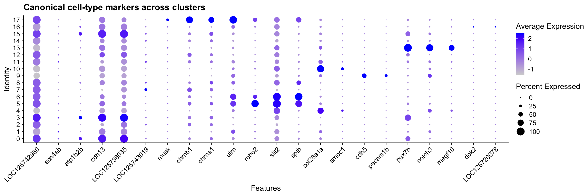
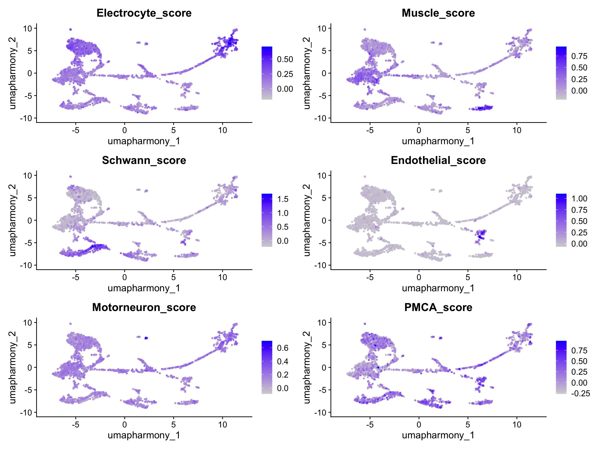
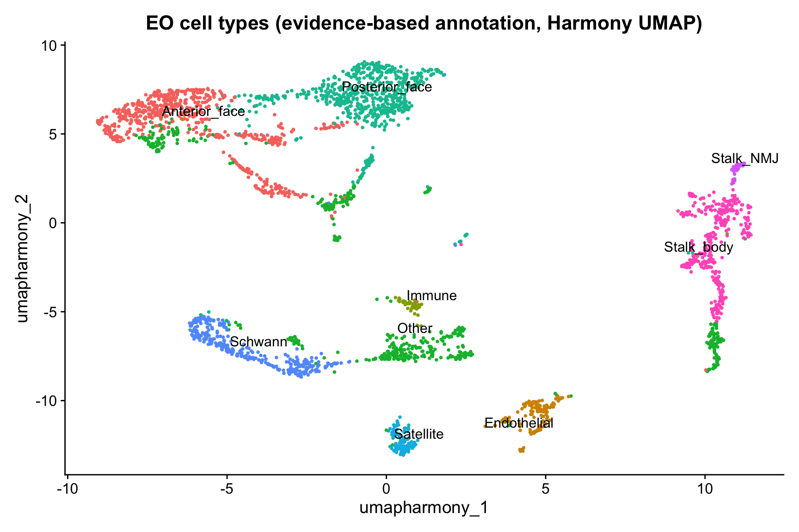
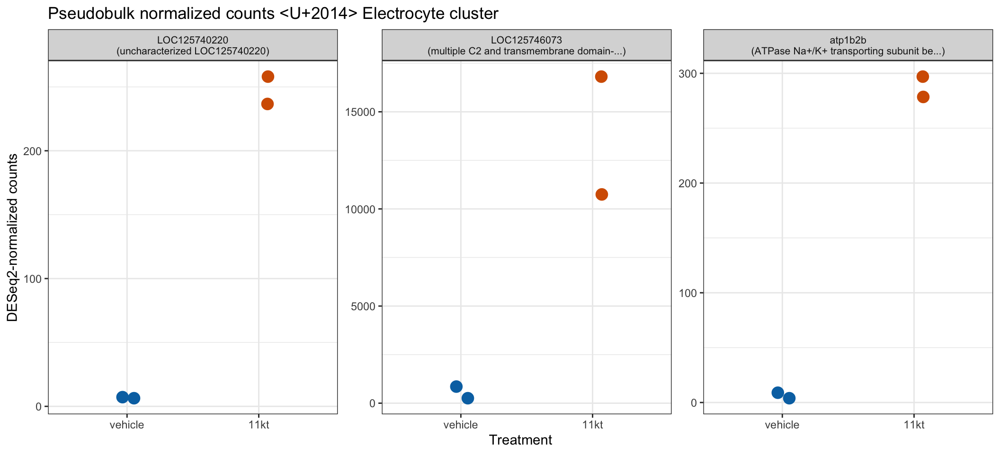
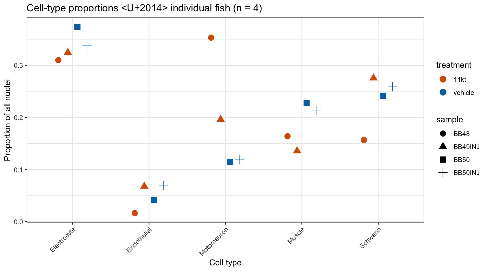
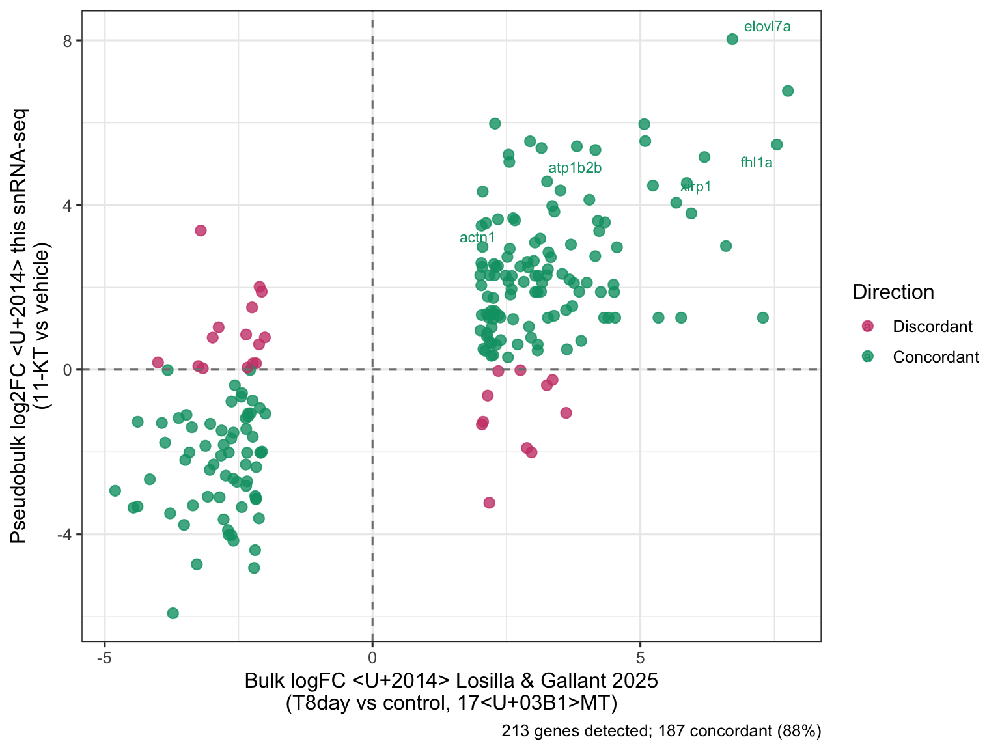

library(Seurat)
library(tidyverse)
library(patchwork)
library(glmGamPoi)
library(presto)
library(DESeq2)
library(limma)
library(ggrepel)
if (requireNamespace("speckle", quietly = TRUE)) library(speckle)Cell-Type Annotation and Differential Expression in the Electric Organ
NoteQuestions
- How do we turn unlabeled clusters into named cell types using curated marker genes?
- What anatomically distinguishes stalk electrocytes from face electrocytes, and how do we detect that split molecularly?
- Why is it statistically wrong to compare individual nuclei between treatment conditions, and what does pseudobulk fix?
- Does our snRNA-seq pipeline recover the gene-expression signatures of the androgen response previously found by bulk RNA-seq?
TipObjectives
- Load the post-Harmony checkpoint produced in Friday’s preprocessing episode.
- Find cluster markers with
FindAllMarkersand join NCBI gene-product descriptions for interpretation. - Assign cell-type labels (electrocyte, muscle, Schwann, endothelial, motor neuron) using curated marker gene lists and
AddModuleScore. - Sub-classify electrocytes into stalk vs. face using PMCA paralog expression.
- Aggregate raw counts per (cell type × sample) and run DESeq2 with treatment as the contrast.
- Plot per-fish pseudobulk values for top DE genes and interpret the n=2-per-group result honestly.
- Cross-validate against the Losilla & Gallant 2025 bulk RNA-seq DEG table.
Introduction
Yesterday you took raw CellRanger output for four EO samples, normalized it, corrected for GEM-well batch with Harmony, and produced a clustered UMAP. The end state — saved as data/checkpoints/02_harmony_clustered.rds — is a Seurat object with unlabeled numbered clusters.
Today is the biological payoff. We assign cell-type identities to those clusters, sub-divide the electrocytes into stalk vs. face populations, and run the central statistical test of the experiment: does 11-KT change gene expression in the electric organ, and if so, in which cells and which genes?
The episode has four parts:
- Cluster markers. What genes define each cluster, and what do they tell us about cell identity?
- Cell-type annotation. Use curated marker gene lists and module scores to label every cluster.
- Stalk vs. face. PMCA paralog expression separates innervated stalklets from the bulk of the electrocyte population.
- Differential expression. Pseudobulk + DESeq2 contrast 11-KT vs. vehicle within each cell type; cross-validate against Losilla & Gallant 2025.
Setup and load Friday’s checkpoint
The checkpoint is the starting state regardless of whether you ran Friday’s full pipeline. If you finished Friday, your in-memory object should already match; loading the checkpoint guarantees a known-good entry point.
merged_seurat <- readRDS("data/checkpoints/02_harmony_clustered.rds")
merged_seuratAn object of class Seurat
50433 features across 2888 samples within 2 assays
Active assay: SCT (19912 features, 3000 variable features)
3 layers present: counts, data, scale.data
1 other assay present: RNA
4 dimensional reductions calculated: pca, umap.pca, harmony, umap.harmonyFind cluster markers
FindAllMarkers runs a Wilcoxon test for each cluster against all other cells, returning genes that distinguish each cluster from the rest. Before calling it on SCT-normalized data with multiple samples, we run PrepSCTFindMarkers() to re-correct counts to a common depth across samples.
merged_seurat <- PrepSCTFindMarkers(merged_seurat, verbose = FALSE)all_markers <- FindAllMarkers(
merged_seurat,
only.pos = TRUE,
verbose = FALSE
)
all_markers <- all_markers |>
arrange(cluster, desc(avg_log2FC))
head(all_markers, 20) p_val avg_log2FC pct.1 pct.2 p_val_adj cluster
LOC125741747 7.777872e-105 3.087333 0.437 0.067 1.548730e-100 0
LOC125721977 1.529742e-08 2.973992 0.029 0.004 3.046021e-04 0
myog 2.299161e-04 2.917408 0.010 0.001 1.000000e+00 0
tbx22 1.265876e-132 2.875450 0.885 0.399 2.520612e-128 0
LOC125719994 1.774922e-08 2.817873 0.032 0.004 3.534225e-04 0
slc6a17 8.401357e-32 2.778927 0.144 0.022 1.672878e-27 0
ankrd13b 5.849481e-09 2.776053 0.037 0.006 1.164749e-04 0
LOC125704986 5.034884e-33 2.754178 0.163 0.028 1.002546e-28 0
LOC125707038 7.776858e-12 2.721011 0.051 0.008 1.548528e-07 0
LOC125751972 3.391235e-82 2.707783 0.385 0.066 6.752628e-78 0
myom2a 2.525081e-60 2.682358 0.285 0.047 5.027941e-56 0
LOC125724935 2.908150e-67 2.661823 0.346 0.065 5.790708e-63 0
LOC125709307 3.360915e-20 2.647011 0.110 0.021 6.692253e-16 0
LOC125710193 3.355174e-59 2.637301 0.268 0.042 6.680822e-55 0
LOC125728302 3.362850e-17 2.636122 0.080 0.013 6.696106e-13 0
rin1a 4.061909e-44 2.635009 0.234 0.044 8.088074e-40 0
LOC125708896 1.429687e-183 2.600322 0.944 0.315 2.846794e-179 0
LOC125712043 1.914252e-46 2.595480 0.224 0.038 3.811658e-42 0
fam83e 1.785274e-11 2.595480 0.054 0.009 3.554838e-07 0
LOC125747875 4.121857e-08 2.595480 0.037 0.006 8.207441e-04 0
gene
LOC125741747 LOC125741747
LOC125721977 LOC125721977
myog myog
tbx22 tbx22
LOC125719994 LOC125719994
slc6a17 slc6a17
ankrd13b ankrd13b
LOC125704986 LOC125704986
LOC125707038 LOC125707038
LOC125751972 LOC125751972
myom2a myom2a
LOC125724935 LOC125724935
LOC125709307 LOC125709307
LOC125710193 LOC125710193
LOC125728302 LOC125728302
rin1a rin1a
LOC125708896 LOC125708896
LOC125712043 LOC125712043
fam83e fam83e
LOC125747875 LOC125747875Annotate with gene-product descriptions
The Seurat row names mix curated gene symbols and LOC##### IDs. To make the marker table interpretable, we parse the B. brachyistius GTF and join the human-readable product description for each gene.
gtf_raw <- read_tsv(
"data/ssrnaseq_data/genes.gtf.gz",
comment = "#",
col_names = FALSE,
col_types = "ccciicccc",
show_col_types = FALSE
)
gene_desc <- gtf_raw |>
filter(str_detect(X9, 'product "')) |>
mutate(
gene_id = str_extract(X9, 'gene_id "([^"]+)"', group = 1),
gene_name = str_extract(X9, 'gene "([^"]+)"', group = 1),
product = str_extract(X9, 'product "([^"]+)"', group = 1)
) |>
dplyr::select(gene_id, gene_name, product) |>
distinct(gene_id, .keep_all = TRUE)
# Build a combined lookup indexed by either gene_id (LOC ID) OR gene_name (symbol)
gene_lookup <- bind_rows(
gene_desc |> transmute(key = gene_id, gene_name, product),
gene_desc |>
filter(!is.na(gene_name), gene_name != gene_id) |>
transmute(key = gene_name, gene_name, product)
) |>
distinct(key, .keep_all = TRUE)annotated_markers <- all_markers |>
left_join(gene_lookup |> dplyr::select(key, gene_name, product),
by = c("gene" = "key")
)
annotated_markers |>
group_by(cluster) |>
slice_max(avg_log2FC, n = 3) |>
ungroup() |>
dplyr::select(cluster, gene, gene_name, product, avg_log2FC, p_val_adj) |>
head(20)# A tibble: 20 x 6
cluster gene gene_name product avg_log2FC p_val_adj
<fct> <chr> <chr> <chr> <dbl> <dbl>
1 0 LOC125741747 LOC125741747 uncharacterized LOC12~ 3.09 1.55e-100
2 0 LOC125721977 LOC125721977 uncharacterized LOC12~ 2.97 3.05e- 4
3 0 myog myog myogenin 2.92 1 e+ 0
4 1 napepld napepld N-acyl phosphatidylet~ 2.39 4.38e- 3
5 1 LOC125723541 LOC125723541 uncharacterized LOC12~ 2.36 3.25e- 21
6 1 ykt6 ykt6 YKT6 v-SNARE homolog ~ 2.36 9.45e- 1
7 2 LOC125746078 LOC125746078 uncharacterized LOC12~ 6.93 2.79e- 85
8 2 LOC125742488 LOC125742488 uncharacterized LOC12~ 6.82 1.65e- 14
9 2 LOC125738950 LOC125738950 potassium voltage-gat~ 6.15 3.51e-102
10 3 capgb capgb capping protein (acti~ 5.34 6.77e- 4
11 3 LOC125725482 LOC125725482 uncharacterized LOC12~ 5.34 6.77e- 4
12 3 LOC125746231 LOC125746231 serine/threonine-prot~ 4.93 3.52e- 6
13 4 LOC125748152 LOC125748152 delta-type opioid rec~ 5.94 2.66e- 5
14 4 erbb3a erbb3a erb-b2 receptor tyros~ 5.94 2.66e- 5
15 4 LOC125740478 LOC125740478 ATP-sensitive inward ~ 5.61 2.66e- 5
16 4 LOC125746755 LOC125746755 zinc finger matrin-ty~ 5.61 2.66e- 5
17 4 hapln2 hapln2 hyaluronan and proteo~ 5.61 2.66e- 5
18 4 LOC125708476 LOC125708476 cartilage intermediat~ 5.61 2.66e- 5
19 5 LOC125738877 LOC125738877 leptin-B-like 5.38 2.72e- 3
20 5 LOC125744864 LOC125744864 tubulin alpha-1A chai~ 5.38 2.72e- 3
NoteWhy so many
LOC#####?
NCBI assigns LOC names as provisional symbols when a gene is computationally predicted but lacks an official name. The number is the NCBI Gene ID. The product field is where the function lives — “potassium voltage-gated channel…like” is a meaningful clue even when the gene name is LOC125743019.
For non-model genomes like B. brachyistius, this level of annotation is typical and improves over time as more papers are published.
Curated cell-type annotation
Generic GO enrichment performs poorly when one cell type dominates a tissue. Instead, we annotate using curated marker gene lists validated in published work on the mormyrid electric organ.
Two electrocyte markers are unambiguous across the literature:
- scn4aa (
LOC125742960) — Nav1.4a, the principal electrogenic Na⁺ channel. Convergently recruited into electric organs across multiple independent electric-fish lineages (Gallant et al. 2014 Science; Thompson et al. 2018 Curr Biol). - kcna7a (
LOC125743019) — Kv1.7a, the delayed-rectifier K⁺ channel setting EOD repolarization kinetics (Losilla & Gallant 2025 JEB).
Electrocytes are myogenic in origin (derived from muscle), so muscle satellite cells (pax7b, myomesins) typically sit near electrocytes on the UMAP. Schwann cells, vascular endothelial cells, and a small motor neuron population round out the expected atlas.
marker_genes <- list(
Electrocyte = c(
# Sodium channels — Nav1.4 paralogs
"LOC125742960", # scn4aa
"scn4ab",
# Potassium channels — repolarisation
"LOC125743019", # kcna7a
"kcna7", "kcnq1.2", "kcnq5a", "kcnn2",
# Ion transport / electrocyte identity
"cnga3a", "atp1b2b",
# Cell-surface and structural identity
"rrad", "igsf9ba", "robo2", "tenm1"
),
Muscle = c(
"pax7b", "pitx3", "myom2a", "myom2b",
"hey2", "ezh2", "megf10", "mcama",
"fgfr4", "tbx22"
),
Schwann = c(
"col28a1a", "smoc1", "prss12", "antxr1b",
"numb", "olfml2ba", "col6a3", "sema3bl"
),
Endothelial = c(
"cdh5", "pecam1b", "kdr", "flt1",
"clec14a", "pcdh12", "podxl", "adgrl4"
),
Motorneuron = c(
"mnx1",
"LOC125712540", # isl-1
"LOC125745880", # isl-1-like
"LOC125704285", # isl-2a
"LOC125706047", # isl-2a-like
"chata", "slc18a3a",
"elavl3", "rbfox3a",
"nefma", "nefla", "neflb",
"LOC125751823", "prph",
"sv2a", "snap25a",
"LOC125712969",
"gap43", "nrn1b", "nrxn1a"
)
)
# Filter to genes actually present in this dataset
marker_genes <- lapply(marker_genes, function(g) g[g %in% rownames(merged_seurat)])
print(sapply(marker_genes, length))Electrocyte Muscle Schwann Endothelial Motorneuron
13 10 8 8 12 # Stalk sub-type marker: PMCA (plasma membrane Ca2+-ATPase) paralogs
# Baumann et al. 2025 — pan-PMCA protein enriched on stalklet membrane
pmca_genes <- c("atp2b1a", "atp2b2", "atp2b3b", "atp2b4")
pmca_genes <- pmca_genes[pmca_genes %in% rownames(merged_seurat)]Marker dot plot across clusters
A compact diagnostic — 3–4 most informative markers per cell type — projected as a dot plot across clusters. Dot size = fraction of cells expressing; color = mean expression.
dot_genes <- c(
"LOC125742960", "scn4ab", "atp1b2b", "rrad",
pmca_genes,
"pax7b", "myom2a", "hey2",
"col28a1a", "smoc1", "numb",
"cdh5", "pecam1b", "kdr",
"mnx1", "LOC125712540", "chata", "elavl3", "rbfox3a"
)
dot_genes <- dot_genes[dot_genes %in% rownames(merged_seurat)]
DotPlot(merged_seurat,
features = dot_genes,
group.by = "seurat_clusters"
) +
RotatedAxis() +
ggtitle("Canonical cell-type markers across clusters")
Module scores per cell type
AddModuleScore computes the average expression of a gene set minus a random control set — positive scores mean the cell expresses that gene set more than expected by chance. We compute one score per cell type plus a PMCA score.
for (ct in names(marker_genes)) {
if (length(marker_genes[[ct]]) < 3) {
message(ct, ": fewer than 3 markers found — skipping")
next
}
merged_seurat <- AddModuleScore(
merged_seurat,
features = list(marker_genes[[ct]]),
name = paste0(ct, "_score"),
nbin = 12,
seed = 42
)
old_col <- paste0(ct, "_score1")
new_col <- paste0(ct, "_score")
merged_seurat@meta.data[[new_col]] <- merged_seurat@meta.data[[old_col]]
merged_seurat@meta.data[[old_col]] <- NULL
}
score_cols <- paste0(names(marker_genes), "_score")
score_cols <- score_cols[score_cols %in% colnames(merged_seurat@meta.data)]
if (length(pmca_genes) >= 2) {
merged_seurat <- AddModuleScore(
merged_seurat,
features = list(pmca_genes),
name = "PMCA_score",
nbin = 12,
seed = 42
)
merged_seurat$PMCA_score <- merged_seurat$PMCA_score1
merged_seurat$PMCA_score1 <- NULL
}
plot_score_cols <- c(
score_cols,
if ("PMCA_score" %in% colnames(merged_seurat@meta.data)) "PMCA_score"
)
FeaturePlot(merged_seurat,
features = plot_score_cols,
reduction = "umap.harmony",
ncol = 2,
order = TRUE
)
Assign cluster labels and refine stalk identity in one pass
For each cluster we pick the cell type with the highest mean module score. Then we sub-classify the electrocyte cluster with the strongest combined PMCA × electrocyte signal as Stalk_Electrocyte.
cluster_scores <- merged_seurat@meta.data |>
group_by(seurat_clusters) |>
summarise(across(all_of(score_cols), mean, .names = "{.col}"), .groups = "drop")
cluster_labels <- cluster_scores |>
pivot_longer(-seurat_clusters, names_to = "score_col", values_to = "mean_score") |>
mutate(cell_type = str_remove(score_col, "_score")) |>
group_by(seurat_clusters) |>
slice_max(mean_score, n = 1, with_ties = FALSE) |>
ungroup() |>
dplyr::select(seurat_clusters, cell_type, mean_score) |>
arrange(as.integer(as.character(seurat_clusters)))
label_vec <- setNames(
cluster_labels$cell_type,
as.character(cluster_labels$seurat_clusters)
)
merged_seurat$cell_type_go <- unname(label_vec[as.character(merged_seurat$seurat_clusters)])
# Stalk refinement: search ALL clusters by PMCA × electrocyte co-expression score
merged_seurat$cell_type_detail <- merged_seurat$cell_type_go
if (length(pmca_genes) >= 2 && "PMCA_score" %in% colnames(merged_seurat@meta.data)) {
stalk_scores <- merged_seurat@meta.data |>
group_by(seurat_clusters) |>
summarise(
mean_PMCA = mean(PMCA_score),
mean_Elec = mean(Electrocyte_score),
n_cells = n(),
initial_label = names(sort(table(cell_type_go), decreasing = TRUE))[1],
.groups = "drop"
) |>
mutate(stalk_score = mean_PMCA * pmax(mean_Elec, 0)) |>
arrange(desc(stalk_score))
stalk_cluster <- as.character(stalk_scores$seurat_clusters[1])
cat("Stalk candidate: cluster", stalk_cluster,
"(PMCA =", round(stalk_scores$mean_PMCA[1], 3), ")\n")
pmca_by_cluster <- merged_seurat@meta.data |>
filter(cell_type_go == "Electrocyte") |>
group_by(seurat_clusters) |>
summarise(mean_PMCA = mean(PMCA_score), n_cells = n(), .groups = "drop") |>
arrange(desc(mean_PMCA))
stalk_idx <- rownames(merged_seurat@meta.data)[
as.character(merged_seurat$seurat_clusters) == stalk_cluster
]
merged_seurat$cell_type_detail[stalk_idx] <- "Stalk_Electrocyte"
}Stalk candidate: cluster 6 (PMCA = 0.072 )DimPlot(merged_seurat,
reduction = "umap.harmony",
group.by = "cell_type_detail",
label = TRUE,
repel = TRUE
) +
ggtitle("EO cell types (marker-based annotation, Harmony UMAP)") +
NoLegend()
Electrocyte co-expression." width="864">This is a natural checkpoint — the cluster-to-cell-type map is now baked into the object, and the next steps (face sub-classification + pseudobulk) build on it.
saveRDS(merged_seurat,
file = "data/checkpoints/03_annotated.rds")
ImportantChallenge 1: Defend the cell-type calls (15 min)
Look at the annotated UMAP and the dot plot above.
- Which cluster has the strongest electrocyte signature? Is it the stalk or a face cluster?
- The motor neuron population in EO is often sparse. Did the annotation find one? Inspect the
mnx1andchataFeaturePlot — does the labeled motor neuron cluster express both? - Find one cluster you’re skeptical of. What evidence would change your mind?
TipSolution
There is no single correct answer — it depends on clustering resolution. General expectations:
- One or more large clusters should receive the Electrocyte label, since electrocytes dominate the EO. The cluster refined to Stalk_Electrocyte should have high PMCA expression.
- Because electrocytes are myogenic, Muscle clusters may appear nearby on the UMAP.
- Schwann and Endothelial clusters are usually compact and small.
- Motorneuron clusters may be sparse — cholinergic terminals don’t always survive nuclear isolation. The cluster should co-express mnx1 (TF) and chata (cholinergic identity).
Skepticism is healthy. A “Schwann” cluster with no col28a1a expression deserves a second look — likely a misassignment driven by one outlier marker.
TipStretch break — and a fork in the road
This is the end of the cell-type annotation block. The remaining material is denser than what came before it:
- The face sub-classification section below (k-means on UMAP centroids, markers, biology check) is conceptually optional — if you’re running short on time, skip directly to “Pseudobulk aggregation” and come back to this on your own. Anything downstream uses
cell_type_label, which is already in the saved checkpoint. - The DESeq2 + propeller + cross-study scatter sections are the central statistical payoff and should be hit live.
If you’re on pace, take five minutes to stand up, stretch, and refill your water. The rest of the episode runs straight through to differential expression.
Electrocyte face sub-classification
Optional for fast finishers — skippable if the room is tight on time. Each electrocyte has two electrochemically distinct membranes: the posterior (innervated) face, which generates the action potential, and the anterior (non-innervated) face, which generates a counter-potential. The exact channel inventory of each face is not fully resolved in B. brachyistius. Our data can begin to address this.
Below we split the non-stalk electrocyte clusters into two candidate face groups using k-means on UMAP centroids, find markers that distinguish them, and judge whether the split is biologically coherent.
if (exists("stalk_cluster") && exists("pmca_by_cluster")) {
face_clusters <- pmca_by_cluster |>
filter(as.character(seurat_clusters) != stalk_cluster) |>
pull(seurat_clusters) |>
as.character()
umap_mat <- Embeddings(merged_seurat, "umap.harmony")
face_centroids <- merged_seurat@meta.data |>
rownames_to_column("cell") |>
filter(as.character(seurat_clusters) %in% face_clusters) |>
left_join(as.data.frame(umap_mat) |> rownames_to_column("cell"), by = "cell") |>
group_by(seurat_clusters) |>
summarise(
U1 = mean(.data[[colnames(umap_mat)[1]]]),
U2 = mean(.data[[colnames(umap_mat)[2]]]),
.groups = "drop"
)
set.seed(42)
km <- kmeans(face_centroids[, c("U1", "U2")], centers = 2)
face_centroids$face_group <- as.character(km$cluster)
face_A <- face_centroids |> filter(face_group == "1") |> pull(seurat_clusters) |> as.character()
face_B <- face_centroids |> filter(face_group == "2") |> pull(seurat_clusters) |> as.character()
cat("Face group A clusters:", paste(face_A, collapse = ", "), "\n")
cat("Face group B clusters:", paste(face_B, collapse = ", "), "\n")
}Face group A clusters: 1, 3
Face group B clusters: 2, 15 if (exists("face_A") && exists("face_B")) {
elec_cells <- rownames(merged_seurat@meta.data)[
merged_seurat$cell_type_go == "Electrocyte"
]
face_markers <- FindMarkers(
merged_seurat,
ident.1 = face_A,
ident.2 = face_B,
group.by = "seurat_clusters",
cells = elec_cells,
verbose = FALSE
) |>
tibble::rownames_to_column("gene") |>
left_join(gene_lookup |> dplyr::select(key, gene_name, product),
by = c("gene" = "key")
) |>
arrange(desc(avg_log2FC))
head(face_markers |> filter(p_val_adj < 0.05), 15)
} gene p_val avg_log2FC pct.1 pct.2 p_val_adj gene_name
1 lrrc30a 1.581103e-06 4.663771 0.064 0.000 3.148291e-02 lrrc30a
2 LOC125727757 1.039559e-10 4.466734 0.119 0.003 2.069969e-06 LOC125727757
3 LOC125709350 5.530848e-44 3.782056 0.535 0.090 1.101302e-39 LOC125709350
4 LOC125723541 3.768791e-12 3.767393 0.148 0.009 7.504416e-08 LOC125723541
5 LOC125740822 5.815798e-08 3.632744 0.094 0.006 1.158042e-03 LOC125740822
6 si:dkey-1h6.8 6.352538e-11 3.581670 0.140 0.012 1.264917e-06 si:dkey-1h6.8
7 zgc:56699 1.106972e-18 3.511280 0.283 0.050 2.204203e-14 zgc:56699
8 LOC125751019 2.411370e-09 3.501499 0.116 0.009 4.801520e-05 LOC125751019
9 atp1b2b 1.621511e-23 3.472279 0.324 0.047 3.228753e-19 atp1b2b
10 lingo2 2.779313e-18 3.384189 0.329 0.087 5.534169e-14 lingo2
11 LOC125704125 1.714238e-06 3.382200 0.077 0.006 3.413390e-02 LOC125704125
12 sowahd 1.597102e-08 3.357109 0.107 0.009 3.180150e-04 sowahd
13 LOC125716884 1.153996e-09 3.326413 0.126 0.012 2.297836e-05 LOC125716884
14 LOC125730833 7.294419e-09 3.299006 0.105 0.006 1.452465e-04 LOC125730833
15 LOC125710080 2.474591e-15 3.227179 0.219 0.029 4.927405e-11 LOC125710080
product
1 leucine rich repeat containing 30a, transcript variant X2
2 heat shock protein beta-1-like, transcript variant X1
3 uncharacterized LOC125709350
4 uncharacterized LOC125723541, transcript variant X1
5 polymeric immunoglobulin receptor-like, transcript variant X7
6 uncharacterized si:dkey-1h6.8, transcript variant X3
7 uncharacterized protein LOC405758 homolog, transcript variant X3
8 protein boule-like, transcript variant X1
9 ATPase Na+/K+ transporting subunit beta 2b
10 leucine rich repeat and Ig domain containing 2, transcript variant X4
11 cyclic nucleotide-gated cation channel beta-3-like
12 sosondowah ankyrin repeat domain family d
13 growth arrest and DNA damage-inducible protein GADD45 alpha-like
14 protein Wnt-7b-like
15 ETS translocation variant 5-likeif (exists("face_markers")) {
face_markers |>
filter(p_val_adj < 0.05, abs(avg_log2FC) > 0.5, !is.na(product)) |>
mutate(product = as.character(product),
category = case_when(
str_detect(product, regex("potassium|sodium|calcium|chloride|channel|transporter", ignore_case = TRUE)) ~ "Ion channel/transporter",
str_detect(product, regex("collagen|fibronectin|laminin|cadherin|integrin", ignore_case = TRUE)) ~ "ECM/adhesion",
str_detect(product, regex("kinase|phosphatase|GTPase|signaling", ignore_case = TRUE)) ~ "Signaling",
str_detect(product, regex("actin|myosin|tubulin|spectrin|cytoskeletal", ignore_case = TRUE)) ~ "Cytoskeletal",
str_detect(product, regex("receptor|ligand", ignore_case = TRUE)) ~ "Receptor/ligand",
TRUE ~ "Other/uncharacterized"
)) |>
dplyr::count(category, sort = TRUE)
} category n
1 Other/uncharacterized 1271
2 Signaling 178
3 Receptor/ligand 83
4 Cytoskeletal 75
5 Ion channel/transporter 51
6 ECM/adhesion 48
NoteThree reasons electrocyte clusters can split
When non-stalk electrocyte clusters form two UMAP-separated groups, the explanation is usually one of three things:
- Biological — anterior vs. posterior face identity. The posterior face is dominated by Nav channels; the anterior face relies on K⁺ and Ca²⁺ channels. Coherent ion-channel families in the top DEGs support this.
- Spatial/anatomical — rostral vs. caudal segments. Some mormyrids show regional EO specialization. Cytoskeletal or ECM differences (not channels) hint at this.
- Technical — residual sample-of-origin effects. Even after Harmony, mild batch can split a cell type. Check sample composition per cluster.
Rule of thumb: many between-group DEGs in coherent functional families → biological. Few DEGs or uncharacterized proteins → likely technical.
Pseudobulk differential expression with DESeq2
This is the central analytical question of the workshop: does 11-KT change gene expression in the electric organ?
Why pseudobulk: the pseudoreplication problem
This dataset contains ~2,900 nuclei from four fish — two 11-KT (BB48, BB49INJ), two vehicle (BB50, BB50INJ). A tempting but wrong approach is to test each nucleus as an independent observation: Wilcoxon on ~1,400 11-KT nuclei vs. ~1,400 vehicle nuclei.
The problem: nuclei from the same fish are not independent. They share fish-level variation in diet, microbiome, stress history, and countless other factors that have nothing to do with 11-KT. Treating each nucleus as a replicate inflates the degrees of freedom ~700-fold, deflates p-values accordingly, and lets results from one unusual fish look like a reproducible treatment effect.
Pseudobulk solves this: we sum raw counts per gene across nuclei within each (cell type × sample), producing one count per gene per cell type per fish. DESeq2 then models those four numbers per cell type with treatment as the contrast.
WarningRaw counts only — never SCT residuals or Harmony
DESeq2 fits its own size-factor normalization internally. It requires raw integer count data:
| Input | Appropriate for DE? |
|---|---|
AggregateExpression(assay = "RNA") |
✅ Yes — raw UMI counts |
SCT residuals (scale.data) |
❌ No — continuous, not integer |
Log-normalized counts (data slot) |
❌ No — violates count model |
| Harmony-corrected embeddings | ❌ No — not counts at all |
Use assay = "RNA" in every AggregateExpression call. SCT and Harmony are for clustering and visualization only.
Build the pseudobulk matrix
pseudobulk_counts <- AggregateExpression(
merged_seurat,
assays = "RNA",
group.by = c("cell_type_go", "orig.ident"),
return.seurat = FALSE
)$RNA
cat("Pseudobulk matrix dimensions:", dim(pseudobulk_counts), "\n")Pseudobulk matrix dimensions: 30521 20 print(colnames(pseudobulk_counts)) [1] "Electrocyte_EO-BB48" "Electrocyte_EO-BB49INJ" "Electrocyte_EO-BB50"
[4] "Electrocyte_EO-BB50INJ" "Endothelial_EO-BB48" "Endothelial_EO-BB49INJ"
[7] "Endothelial_EO-BB50" "Endothelial_EO-BB50INJ" "Motorneuron_EO-BB48"
[10] "Motorneuron_EO-BB49INJ" "Motorneuron_EO-BB50" "Motorneuron_EO-BB50INJ"
[13] "Muscle_EO-BB48" "Muscle_EO-BB49INJ" "Muscle_EO-BB50"
[16] "Muscle_EO-BB50INJ" "Schwann_EO-BB48" "Schwann_EO-BB49INJ"
[19] "Schwann_EO-BB50" "Schwann_EO-BB50INJ" Sample metadata for the design matrix
Parse the column names ("CellType_EO-BB48" etc.) into a metadata data frame with treatment as a factor — vehicle as reference so positive log2FC means up in 11-KT.
pb_meta <- data.frame(
col_id = colnames(pseudobulk_counts),
stringsAsFactors = FALSE
) |>
tidyr::separate(col_id,
into = c("cell_type", "orig_ident"),
sep = "_",
extra = "merge"
) |>
mutate(
sample = sub("EO-", "", orig_ident),
treatment = case_when(
sample %in% c("BB48", "BB49INJ") ~ "11kt",
TRUE ~ "vehicle"
),
treatment = factor(treatment, levels = c("vehicle", "11kt"))
)
rownames(pb_meta) <- colnames(pseudobulk_counts)
pb_meta cell_type orig_ident sample treatment
Electrocyte_EO-BB48 Electrocyte EO-BB48 BB48 11kt
Electrocyte_EO-BB49INJ Electrocyte EO-BB49INJ BB49INJ 11kt
Electrocyte_EO-BB50 Electrocyte EO-BB50 BB50 vehicle
Electrocyte_EO-BB50INJ Electrocyte EO-BB50INJ BB50INJ vehicle
Endothelial_EO-BB48 Endothelial EO-BB48 BB48 11kt
Endothelial_EO-BB49INJ Endothelial EO-BB49INJ BB49INJ 11kt
Endothelial_EO-BB50 Endothelial EO-BB50 BB50 vehicle
Endothelial_EO-BB50INJ Endothelial EO-BB50INJ BB50INJ vehicle
Motorneuron_EO-BB48 Motorneuron EO-BB48 BB48 11kt
Motorneuron_EO-BB49INJ Motorneuron EO-BB49INJ BB49INJ 11kt
Motorneuron_EO-BB50 Motorneuron EO-BB50 BB50 vehicle
Motorneuron_EO-BB50INJ Motorneuron EO-BB50INJ BB50INJ vehicle
Muscle_EO-BB48 Muscle EO-BB48 BB48 11kt
Muscle_EO-BB49INJ Muscle EO-BB49INJ BB49INJ 11kt
Muscle_EO-BB50 Muscle EO-BB50 BB50 vehicle
Muscle_EO-BB50INJ Muscle EO-BB50INJ BB50INJ vehicle
Schwann_EO-BB48 Schwann EO-BB48 BB48 11kt
Schwann_EO-BB49INJ Schwann EO-BB49INJ BB49INJ 11kt
Schwann_EO-BB50 Schwann EO-BB50 BB50 vehicle
Schwann_EO-BB50INJ Schwann EO-BB50INJ BB50INJ vehicleRun DESeq2 per cell type
For each cell type with at least 2 samples per condition, build a DESeqDataSet and extract results for the 11-KT vs. vehicle contrast.
sample_counts_per_ct <- pb_meta |>
group_by(cell_type, treatment) |>
summarise(n = n(), .groups = "drop") |>
group_by(cell_type) |>
filter(all(n >= 2)) |>
pull(cell_type) |>
unique()
cat("Cell types testable:\n")Cell types testable:print(sample_counts_per_ct)[1] "Electrocyte" "Endothelial" "Motorneuron" "Muscle" "Schwann" de_results <- list()
dds_objects <- list()
for (ct in sample_counts_per_ct) {
cols <- which(pb_meta$cell_type == ct)
mat <- pseudobulk_counts[, cols, drop = FALSE]
meta_sub <- pb_meta[cols, , drop = FALSE]
mat <- mat[rowSums(mat) > 0, , drop = FALSE]
dds <- DESeqDataSetFromMatrix(
countData = mat,
colData = meta_sub,
design = ~treatment
)
suppressWarnings(dds <- DESeq(dds, quiet = TRUE))
res <- results(dds,
contrast = c("treatment", "11kt", "vehicle"),
alpha = 0.05
)
de_results[[ct]] <- as.data.frame(res) |>
tibble::rownames_to_column("gene") |>
mutate(cell_type = ct) |>
arrange(padj)
dds_objects[[ct]] <- dds
}
de_combined <- bind_rows(de_results)
cat("Total gene × cell-type tests:", nrow(de_combined), "\n")Total gene <U+00D7> cell-type tests: 98523 saveRDS(list(de_results = de_results, dds_objects = dds_objects, pb_meta = pb_meta),
file = "data/checkpoints/04_pseudobulk_dds.rds")
WarningInterpreting DESeq2 with n=2 per group
With only 2 biological replicates per condition, DESeq2 borrows statistical strength across genes via shrinkage, but uncertainty stays high:
- Focus on log2FoldChange magnitude and direction, not just padj. A gene where both 11-KT fish are higher than both vehicle fish is more credible than one driven by a single outlier.
- Padj values will be large — many genes will not reach 0.05. This is the correct result for an n=2 experiment, not a problem to fix.
- A dispersion warning is expected with n=2 — DESeq2 can’t robustly estimate dispersion from two points and borrows from the genome-wide trend.
- Treat the output as a ranked list for follow-up, not a definitive call of DE genes.
Top DE genes per cell type
de_combined |>
filter(!is.na(padj), padj < 0.1) |>
group_by(cell_type) |>
slice_min(padj, n = 5) |>
ungroup() |>
left_join(gene_lookup |> dplyr::select(key, product), by = c("gene" = "key")) |>
dplyr::select(cell_type, gene, product, log2FoldChange, lfcSE, padj)# A tibble: 20 x 6
cell_type gene product log2FoldChange lfcSE padj
<chr> <chr> <chr> <dbl> <dbl> <dbl>
1 Electrocyte LOC125746073 multiple C2 and trans~ 4.57 0.420 1.07e-23
2 Electrocyte atp1b2b ATPase Na+/K+ transpo~ 5.34 0.559 5.93e-18
3 Electrocyte LOC125740220 uncharacterized LOC12~ 5.17 0.567 2.43e-16
4 Electrocyte LOC125728537 sprouty-related, EVH1~ 3.78 0.432 4.79e-15
5 Electrocyte xirp1 xin actin binding rep~ 4.06 0.467 6.69e-15
6 Motorneuron LOC125746073 multiple C2 and trans~ 4.10 0.437 1.47e-17
7 Motorneuron xirp1 xin actin binding rep~ 6.25 0.792 3.92e-12
8 Motorneuron LOC125747555 myosin heavy chain, f~ -3.66 0.573 1.58e- 7
9 Motorneuron zbtb16a zinc finger and BTB d~ 2.98 0.485 5.31e- 7
10 Motorneuron LOC125745822 uncharacterized LOC12~ -2.98 0.496 9.67e- 7
11 Muscle LOC125751819 cytosolic carboxypept~ 4.73 0.591 3.27e-12
12 Muscle xirp1 xin actin binding rep~ 4.35 0.599 5.30e-10
13 Muscle LOC125745822 uncharacterized LOC12~ -2.75 0.387 7.30e-10
14 Muscle pdzrn3b PDZ domain containing~ 3.64 0.508 7.30e-10
15 Muscle zbtb16a zinc finger and BTB d~ 3.20 0.452 7.30e-10
16 Schwann LOC125746073 multiple C2 and trans~ 4.07 0.383 1.11e-22
17 Schwann LOC125745822 uncharacterized LOC12~ -2.59 0.340 3.70e-11
18 Schwann LOC125747555 myosin heavy chain, f~ -4.49 0.587 3.70e-11
19 Schwann xirp1 xin actin binding rep~ 4.15 0.574 5.20e-10
20 Schwann zbtb16a zinc finger and BTB d~ 2.57 0.364 1.39e- 9Per-fish pseudobulk visualization
With n=2 per group, never plot means ± SE — show every fish’s value as a point. The point of pseudobulk is biological-replicate-level evidence; the visualization should reflect that.
ct_vis <- if ("Electrocyte" %in% sample_counts_per_ct) "Electrocyte" else sample_counts_per_ct[1]
dds_vis <- dds_objects[[ct_vis]]
dds_vis <- estimateSizeFactors(dds_vis)
norm_mat <- counts(dds_vis, normalized = TRUE)
top_genes <- de_results[[ct_vis]] |>
filter(!is.na(padj), padj < 1) |>
slice_min(padj, n = 3) |>
pull(gene)
norm_tidy <- norm_mat[top_genes, , drop = FALSE] |>
as.data.frame() |>
tibble::rownames_to_column("gene") |>
pivot_longer(-gene, names_to = "col_id", values_to = "norm_count") |>
left_join(pb_meta |> tibble::rownames_to_column("col_id"), by = "col_id") |>
left_join(gene_lookup |> dplyr::select(key, gene_name, product),
by = c("gene" = "key")
) |>
mutate(
label = if_else(is.na(product) | product == "",
gene,
paste0(gene, "\n(", str_trunc(product, 40), ")")
)
)
ggplot(norm_tidy, aes(x = treatment, y = norm_count, color = treatment)) +
geom_point(size = 4, position = position_jitter(width = 0.08, seed = 42)) +
facet_wrap(~label, scales = "free_y", nrow = 1) +
scale_color_manual(values = c("11kt" = "#D55E00", "vehicle" = "#0072B2")) +
theme_bw() +
theme(legend.position = "none", strip.text = element_text(size = 8)) +
labs(
title = paste("Pseudobulk normalized counts —", ct_vis, "cluster"),
y = "DESeq2-normalized counts",
x = "Treatment"
)
ImportantChallenge 2: Pick a gene and defend it (15 min)
From the per-fish dot plot, choose one top DE gene that you’d present in a lab meeting as a candidate 11-KT-responsive gene.
- Are both 11-KT fish higher (or both lower) than both vehicle fish? If not, the effect rides on one fish — say so plainly.
- Look up the
productdescription. Does the gene’s function make biological sense in the context of EOD lengthening? - What would you do next to validate this candidate?
TipSolution
There’s no single right answer. The honest reasoning chain:
- Step 1: Replicate consistency. If 11-KT fish #1 and #2 sit clearly above (or below) vehicle fish #1 and #2, the effect is reproducible across animals. If one 11-KT fish overlaps a vehicle fish, the result is fragile — one more animal could flip it.
- Step 2: Biological plausibility. Genes encoding ion channels (Na⁺, K⁺, Ca²⁺), sarcomeric proteins, or known androgen-pathway components are biologically credible candidates. Lipid-metabolism genes are often systemic androgen responses.
- Step 3: Validation. qPCR on independent fish; in situ hybridization to confirm cell-type specificity; published 11-KT response data from related work (you’ll do exactly this in the next section against Losilla & Gallant 2025).
Differential cell-type abundance
Beyond which genes change, we can ask whether cell-type proportions shift. If 11-KT promotes muscle-to-electrocyte differentiation, the Muscle cluster should shrink and Electrocyte grow.
prop_table <- merged_seurat@meta.data |>
group_by(orig.ident, cell_type_go, treatment, sample) |>
summarise(n_cells = n(), .groups = "drop") |>
group_by(orig.ident) |>
mutate(total = sum(n_cells), prop = n_cells / total) |>
ungroup()
prop_table |>
dplyr::select(sample, treatment, cell_type_go, n_cells, total, prop) |>
arrange(treatment, cell_type_go)# A tibble: 20 x 6
sample treatment cell_type_go n_cells total prop
<chr> <chr> <chr> <int> <int> <dbl>
1 BB48 11kt Electrocyte 172 555 0.310
2 BB49INJ 11kt Electrocyte 311 958 0.325
3 BB48 11kt Endothelial 9 555 0.0162
4 BB49INJ 11kt Endothelial 65 958 0.0678
5 BB48 11kt Motorneuron 196 555 0.353
6 BB49INJ 11kt Motorneuron 188 958 0.196
7 BB48 11kt Muscle 91 555 0.164
8 BB49INJ 11kt Muscle 130 958 0.136
9 BB48 11kt Schwann 87 555 0.157
10 BB49INJ 11kt Schwann 264 958 0.276
11 BB50 vehicle Electrocyte 322 861 0.374
12 BB50INJ vehicle Electrocyte 174 514 0.339
13 BB50 vehicle Endothelial 36 861 0.0418
14 BB50INJ vehicle Endothelial 36 514 0.0700
15 BB50 vehicle Motorneuron 99 861 0.115
16 BB50INJ vehicle Motorneuron 61 514 0.119
17 BB50 vehicle Muscle 196 861 0.228
18 BB50INJ vehicle Muscle 110 514 0.214
19 BB50 vehicle Schwann 208 861 0.242
20 BB50INJ vehicle Schwann 133 514 0.259 ggplot(prop_table,
aes(x = cell_type_go, y = prop, color = treatment, shape = sample)
) +
geom_point(size = 3.5, position = position_dodge(width = 0.5)) +
scale_color_manual(values = c("11kt" = "#D55E00", "vehicle" = "#0072B2")) +
theme_bw() +
theme(axis.text.x = element_text(angle = 45, hjust = 1)) +
labs(
title = "Cell-type proportions — individual fish (n = 4)",
y = "Proportion of all nuclei",
x = "Cell type"
)
Test for differential abundance (propeller or arcsine-limma fallback)
Both propeller and the arcsine-limma fallback apply an arcsine-square-root transform to proportions before fitting a linear model. With n=2 per group the power is low — report direction and magnitude, not p-values alone.
if (requireNamespace("speckle", quietly = TRUE)) {
prop_results <- speckle::propeller(
clusters = merged_seurat$cell_type_go,
sample = merged_seurat$orig.ident,
group = merged_seurat$treatment
)
print(prop_results)
} else {
message("speckle not available; using arcsine-limma fallback")
prop_wide <- prop_table |>
mutate(asin_prop = asin(sqrt(prop))) |>
dplyr::select(orig.ident, treatment, cell_type_go, asin_prop) |>
pivot_wider(
id_cols = c(orig.ident, treatment),
names_from = cell_type_go,
values_from = asin_prop,
values_fill = 0
) |>
arrange(treatment)
design <- model.matrix(~treatment, data = prop_wide)
ct_cols <- setdiff(names(prop_wide), c("orig.ident", "treatment"))
fit <- limma::lmFit(t(prop_wide[, ct_cols]), design)
fit <- limma::eBayes(fit)
da_res <- limma::topTable(fit, coef = 2, n = Inf)
print(da_res)
} BaselineProp.clusters BaselineProp.Freq PropMean.11kt
Motorneuron Motorneuron 0.18836565 0.27469766
Muscle Muscle 0.18247922 0.14983167
Electrocyte Electrocyte 0.33898892 0.31727228
Endothelial Endothelial 0.05055402 0.04203295
Schwann Schwann 0.23961219 0.21616543
PropMean.vehicle PropRatio Tstatistic P.Value FDR
Motorneuron 0.11682981 2.3512634 3.0001129 0.04050377 0.1852658
Muscle 0.22082503 0.6785085 -2.4119824 0.07410630 0.1852658
Electrocyte 0.35625257 0.8905824 -0.9165130 0.41179107 0.5114918
Endothelial 0.05592538 0.7515899 -0.8445749 0.44639525 0.5114918
Schwann 0.25016721 0.8640838 -0.7204970 0.51149179 0.5114918Validation: cross-study comparison with Losilla & Gallant 2025
Our pseudobulk result is more trustworthy if it independently recovers the gene-expression changes Losilla & Gallant (2025) found by bulk RNA-seq under 17α-methyltestosterone treatment. We expect: same direction of regulation for shared hits, and a positive correlation in effect sizes.
losilla_bulk <- read_csv(
"data/ssrnaseq_data/EO/losilla_et_al_data.csv",
show_col_types = FALSE
) |>
dplyr::rename(
gene_bulk = "Gene Symbol",
desc_bulk = "Gene Description",
logFC_bulk = "logFC",
FDR_bulk = "FDR"
) |>
mutate(direction_bulk = if_else(logFC_bulk > 0, "up (androgen)", "down (androgen)"))
cat("Losilla & Gallant 2025 bulk DEGs:", nrow(losilla_bulk), "\n")Losilla & Gallant 2025 bulk DEGs: 245 ct_check <- if ("Electrocyte" %in% names(de_results)) "Electrocyte" else names(de_results)[1]
overlap_tbl <- de_results[[ct_check]] |>
inner_join(losilla_bulk, by = c("gene" = "gene_bulk")) |>
mutate(
direction_snrna = if_else(log2FoldChange > 0, "up (11-KT)", "down (11-KT)"),
concordant = sign(log2FoldChange) == sign(logFC_bulk)
) |>
left_join(gene_lookup |> dplyr::select(key, gene_name, product), by = c("gene" = "key"))
n_detected <- nrow(overlap_tbl)
n_concordant <- sum(overlap_tbl$concordant, na.rm = TRUE)
cat(sprintf(
"Losilla DEGs detected in %s pseudobulk: %d / %d (%.0f%%)\n",
ct_check, n_detected, nrow(losilla_bulk),
100 * n_detected / nrow(losilla_bulk)
))Losilla DEGs detected in Electrocyte pseudobulk: 213 / 245 (87%)cat(sprintf(
"Direction concordance: %d / %d (%.0f%%)\n",
n_concordant, n_detected, 100 * n_concordant / n_detected
))Direction concordance: 187 / 213 (88%)label_genes <- c(
"actn1", "actc1c", "myh6", "acta1b", "xirp1",
"elovl7a", "fhl1a", "atp1b2b",
"LOC125742960", "LOC125743019", "kcna7", "scn4b"
)
overlap_tbl |>
mutate(label = if_else(gene %in% label_genes, gene, NA_character_)) |>
ggplot(aes(x = logFC_bulk, y = log2FoldChange, color = concordant)) +
geom_point(size = 2.5, alpha = 0.8) +
geom_hline(yintercept = 0, linetype = "dashed", color = "grey50") +
geom_vline(xintercept = 0, linetype = "dashed", color = "grey50") +
ggrepel::geom_text_repel(aes(label = label), na.rm = TRUE,
size = 3, max.overlaps = 20, box.padding = 0.4) +
scale_color_manual(
values = c("TRUE" = "#009E73", "FALSE" = "#CC4678"),
labels = c("TRUE" = "Concordant", "FALSE" = "Discordant"),
na.value = "grey60"
) +
labs(
x = "Bulk logFC — Losilla & Gallant 2025\n(T8day vs control, 17αMT)",
y = "Pseudobulk log2FC — this snRNA-seq\n(11-KT vs vehicle)",
color = "Direction",
caption = sprintf("%d genes detected; %d concordant (%.0f%%)",
n_detected, n_concordant, 100 * n_concordant / n_detected)
) +
theme_bw(base_size = 12)
ImportantChallenge 3: Interpreting the cross-study comparison (15 min)
Use the scatter plot and concordance numbers to answer:
- Direction concordance. Is the rate substantially above 50% (random chance)? What does that say about whether Harmony + pseudobulk preserved the biological signal?
- Effect-size correlation. Do genes with large bulk logFC also show larger snRNA-seq fold-changes? What does a positive trend mean beyond direction alone?
- Hormone comparison. Losilla used 17α-methyltestosterone (17αMT); we used 11-KT. Both are androgens but differ in receptor selectivity and aromatization potential. Would you predict the same genes responding, a subset, or different ones?
TipSolution
- Concordance >70% is strong evidence that the androgen response was preserved. Because the studies used different androgens, different animals, and different sequencing technologies, high directional agreement provides cross-validation.
- A positive trend means relative effect sizes match across methods — not just direction but magnitude. Genes near the origin in both axes respond weakly in both; the upper-right and lower-left quadrants are robust hits.
- Most canonical androgen targets are expected to respond to both — both act through the androgen receptor. Differences could arise from (a) receptor selectivity — 11-KT is the physiological teleost androgen and may bind with higher affinity than synthetic 17αMT; (b) aromatization — 17αMT cannot be converted to estrogens, whereas 11-KT’s aromatization potential differs, possibly activating estrogen-receptor pathways selectively in one study.
TipKey Points
- Cluster markers from
FindAllMarkersplus NCBI gene-product descriptions are the bridge from cluster number to cell-type identity. - Curated marker gene lists from the EO literature, combined with
AddModuleScore, give defensible cell-type labels in a non-model organism. - The stalk sub-classification rides on PMCA paralog expression — Baumann et al. 2025 shows pan-PMCA enrichment on the stalklet membrane.
- Nuclei from the same fish are not independent replicates; treating them as such is pseudoreplication and inflates false-positive rates.
- Pseudobulk aggregation (
AggregateExpressionwithassay = "RNA") sums raw counts per (cell-type × sample), restoring the n=2-per-group structure for DESeq2. - With n=2 per group, report log2FoldChange and direction first, padj second. Plot every fish — never group means.
- propeller (or arcsine-limma) tests cell-type proportion shifts; with n=2 it is severely underpowered and should be interpreted as a ranked list, not a hypothesis test.
- Direction concordance >50% with Losilla & Gallant 2025 — and a positive logFC–logFC correlation — confirms that the snRNA-seq pipeline preserved the biological androgen response.